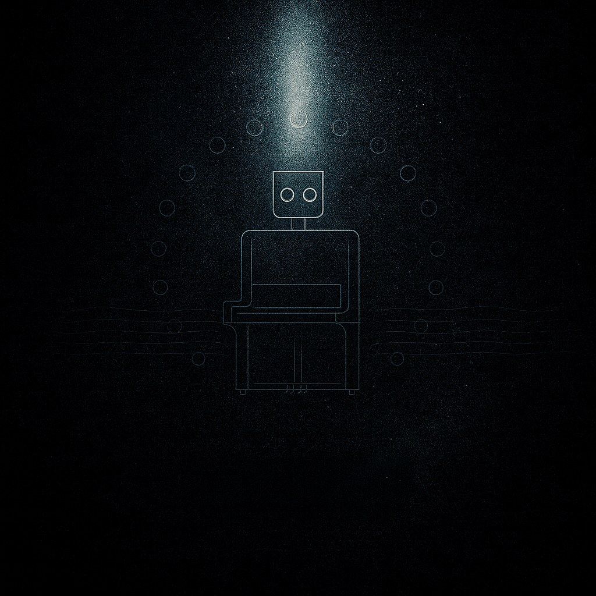

Sequential

This work was composed for the 20th anniversary commemorative event marking the passing of Nam June Paik. 이 작품은 백남준 서거 20주기를 위해 작곡되었습니다.
Program Note
English
Sequential is an electro-acoustic work in three movements built on the formal framework of Mozart's Piano Concerto No. 18 in B♭ major, K.456. The movements are reordered as 1–3–2, re-hearing the concerto's bright exterior and its fragile, lyrical interior through a newly designed temporal flow — less an "arrangement" than a reconstruction of the same material through the language of another era: electronic music, serial organization, and timbre-centered composition.
The title works on two levels: a sense of continuity running from Mozart's K.456 to Nam June Paik's robot K-456 and on to this electro-acoustic work, and a compositional method organized around order and rule — pitch rows, rhythmic patterns, structural segmentation. Acoustic instruments carry the visible, physical layer of the piece — attack, breath, bow friction — while live electronics and multichannel spatialization reveal what instruments alone cannot: residual memory, fragility, mechanical instability, echoing the imperfection and event-like character of K-456 itself.
Movement I lays the groundwork through short, driving rhythmic cells drawn from Mozart's own pitch material (B♭, F, D♭, C), organized by serial rule rather than improvisation — contemporary on the surface, Classical at its core. Movement II shifts from pitch to texture, built from non-pitched sound and extended techniques — col legno, bow friction, percussive attack — translating the rhythmic drive of Movement I into gesture and surface. Movement III is shaped from an AI-generated structural draft, edited and reconfigured by the composer, staging the meeting point of lyrical affect and generative technology — an exposed skeleton to which the composer's choices give form, echoing K-456's own fragility.
Sequential does not reproduce Mozart's concerto "as is." It extracts rhythmic energy, phrase structure, and movement-to-movement contrast, reassembling them through electronic transformation — carrying forward the eventfulness and fragility of Paik's K-456 as the work's aesthetic core.
Korean
《Sequential》은 모차르트 Piano Concerto No.18 in B♭ major, K.456의 형식적 틀을 출발점으로 삼은 3악장 구성의 Electro-acoustic 작품이다. 악장 순서를 1–3–2로 재배열해 원곡의 밝은 외형과 그 이면의 서정·취약성을 새로운 시간의 흐름으로 다시 들려준다. 핵심은 "편곡"이 아니라, 같은 재료를 전자음악·총렬적 조직·음색 중심의 구성이라는 다른 시대의 언어로 재구성하는 데 있다.
제목은 두 층위에서 작동한다. 모차르트의 K.456에서 백남준의 로봇 K-456, 그리고 오늘의 electro-acoustic 작업으로 이어지는 연속성의 감각, 그리고 음열·리듬 패턴·구조적 분절을 중심으로 조직되는 작곡 방식 자체다. 피아노와 현악기가 타격·호흡·활의 마찰 같은 가시적 층을 대표한다면, 라이브 전자음악과 멀티채널 확산은 악기만으로 도달할 수 없는 비가시적 층 — 기억의 잔향, 취약성, 기계적 흔들림 — 을 드러내며 로봇 K-456이 지닌 불완전함과 사건성을 반영한다.
1악장은 모차르트 K.456에서 관찰되는 B♭, F, D♭, C 등의 음을 재료로, 짧고 추진력 있는 리듬 셀을 중심으로 전개된다. 즉흥이 아닌 음열과 규칙에 따른 총렬적 구조로, 겉은 현대적이지만 내부엔 고전의 질서가 흐르는 이중 구조를 형성한다. 2악장은 정확한 음고 대신 col legno, 활 마찰, 타악적 어택 등 특수주법과 텍스처를 중심으로 전개되며, 1악장의 리듬 에너지를 제스처와 표면의 언어로 전환한다. 3악장은 AI가 생성한 구조적 초안을 작곡가가 선택·편집·재구성해 완성한 악장으로, 서정적 감정과 생성 기술이 교차하는 지점을 드러내며 로봇 K-456의 연약함과도 공명한다.
《Sequential》은 모차르트의 협주곡을 그대로 재현하지 않는다. 리듬의 에너지, 프레이즈의 조직, 악장 간 대비라는 핵심 원리를 추출해 전자음악적 변형으로 재조립하며, 그 과정에서 로봇 K-456이 상기시키는 사건성과 취약성이 작품의 미학적 배경으로 스며든다.
Credits
- Composer & Piano: Kim Eunjun
- Viola: Byun Jeongin
- Cello: Yoon Seokwoo
- Flute: Seung Kyounghoon
- Performance:
- 2026 AI Robot Opera 'Sequential', Nam June Paik Art Center, Yongin - Commission: Nam June Paik Art Center
Score Preview
PDF 뷰어를 지원하지 않는 브라우저입니다.